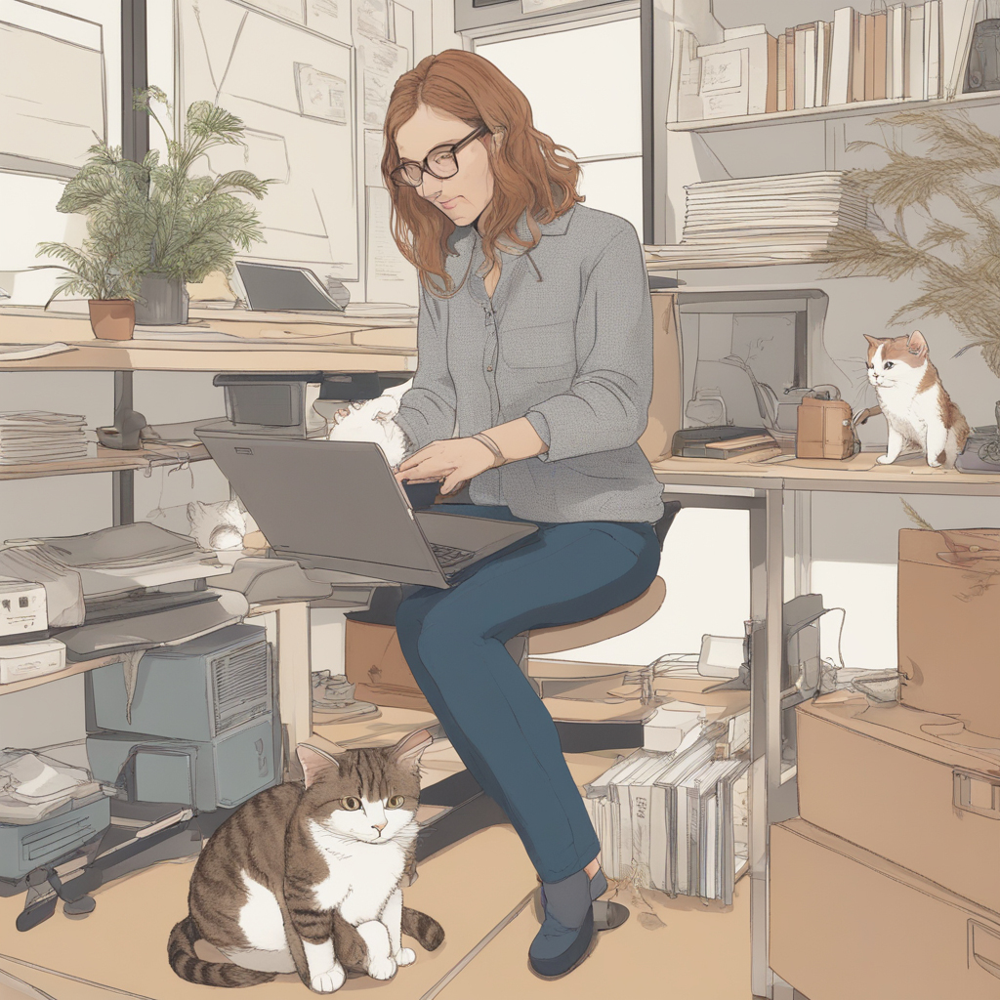
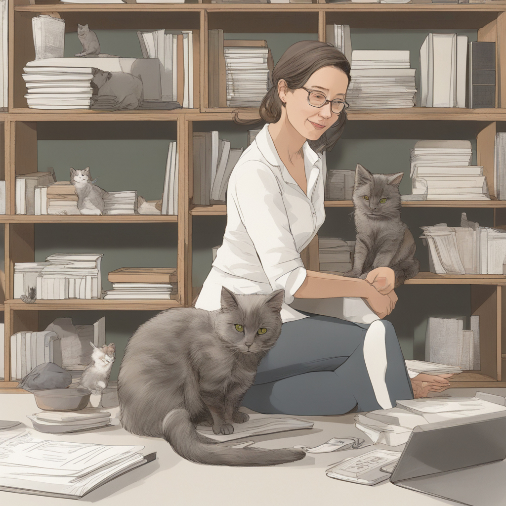

Jumping to New Heights of Feline Happiness Research Through Space Design.
Welcome to the world of Kat Cattery, where feline ergonomics and cat-human harmony take center stage. As a renowned researcher, designer, and professor, I am dedicated to exploring the fascinating realm of cat-human interactions and creating environments that optimize the well-being of both species.
I am open for consultations to help your cat succeed.
 What I Do
Demystifying what cat researchers do ... it's not all keyboards and cuddles.
- Research into feline space design improves quality of life for humans and cats, increasing feline well-being and reducing the risk factors for stress-induced diseases.
- Small spaces require a lot of thought, and multispecies design can revolutionize how we do furniture.
- Communicating with cats is very hard! We must constantly innovate to ensure that our experiments are rigorous and impactful.
Contact
You can reach me at example@example.com.